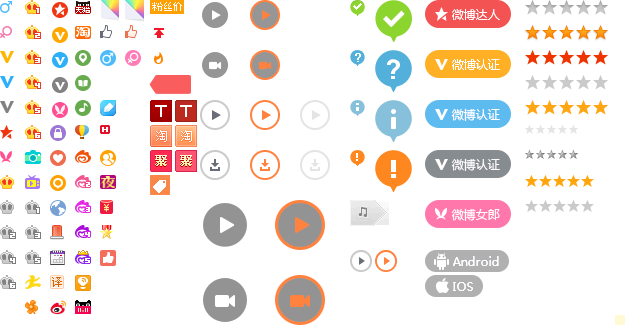
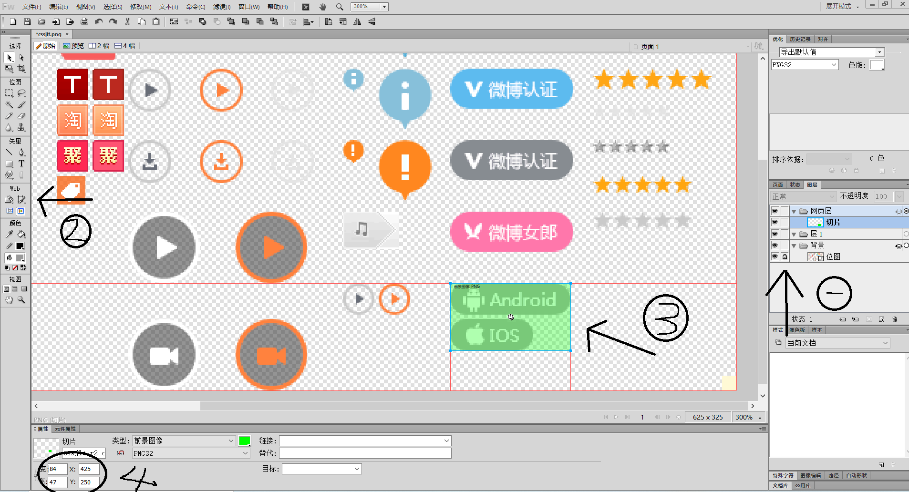

1：CSS雪碧图：CSS雪碧图 即 CSS Sprites，也有人叫它CSS精灵图。
2：雪碧图的由来：一个网站的页面需要大量的小图片或者小图标，但是大量的图片如果放在服务器上，每次当打开网站并且向服务器发送请求，那么请求的次数将大大增加。由此出现了雪碧图的概念
3：用处：是一种CSS图像合并技术，方法是将众多小图标合并到同一张图上，用来减轻http请求压力。然后通过操作CSS的background属性，控制背景的位置以及大小，来展示需要的部分。
我也从网上找到了一张雪碧图：（其实就是一张图片放置各种各样的小图标）

如果获取精灵图里的小图标呢？
第一步：我们需要下载有关制作图片的软件 例如PS 和 FW 在这我用的是FW。
第二步：把图片在软件中打开。
打开后：
1： 在FW的右侧中间层 有一个 图层，然后点击图层里面 有一个叫 位图 在前面的小方框点击一下 就会出现一把锁。这样就不怕把图片搞的乱七八糟的了。
2：在软件的左侧 WEB里有一个叫 “切片”工具 然后点击 用切片工具去选中精灵图里你想要的图标。
3： 选中后在软件的下侧就可以查看你选中图片的宽和高 还有图标在图片的位置了。因为只有这种软件才能完美没有误差的获取的到。

第三步：获取到你想要的值后，使用你的编程软件，在你个某个元素设置背景图片的时候先引进 精灵图，然后通过 background-position来定位。
<div class="twoimage"></div>
.twoimage{
width:84px;
height: 47px;
background-image: url(images/cssjlt.png);
background-position: -425px -250px;
}
这样就获取到精灵图里的小图标了，可以减少许多不必要的图片。
2019-11-07 15:42:42